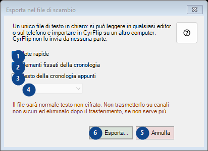
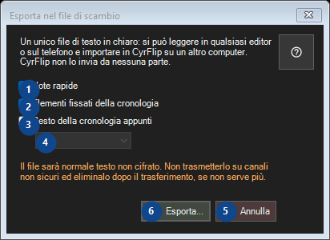

Esporta nel file di scambio
A cosa serve
Leggi le spiegazioni numerate, scegli i valori necessari e continua con il comando della finestra.


Ordine delle operazioni
Leggi le spiegazioni numerate, scegli i valori necessari e continua con il comando della finestra.
Elementi
1. Note rapide
Usa questo comando per l’azione indicata. Leggi ogni richiesta di conferma prima di accettare.
Le tue scorciatoie2. Elementi fissati della cronologia
Usa questo comando per l’azione indicata. Leggi ogni richiesta di conferma prima di accettare.
Le tue scorciatoie3. Resto della cronologia appunti
Usa questo comando per l’azione indicata. Leggi ogni richiesta di conferma prima di accettare.
Le tue scorciatoie4. Un unico file di testo in chiaro: si può leggere in qualsiasi editor o sul telefono e importare in CyrFlip su un altro computer. CyrFlip non lo invia da nessuna parte.
Scegli o inserisci il valore indicato dall’etichetta vicina. Controllalo prima di continuare. Questo elemento non è disponibile. Attiva prima la funzione o seleziona una voce.
Le tue scorciatoie5. Annulla
Usa questo comando per l’azione indicata. Leggi ogni richiesta di conferma prima di accettare.
Le tue scorciatoie6. Esporta...
Usa questo comando per l’azione indicata. Leggi ogni richiesta di conferma prima di accettare.
Le tue scorciatoie